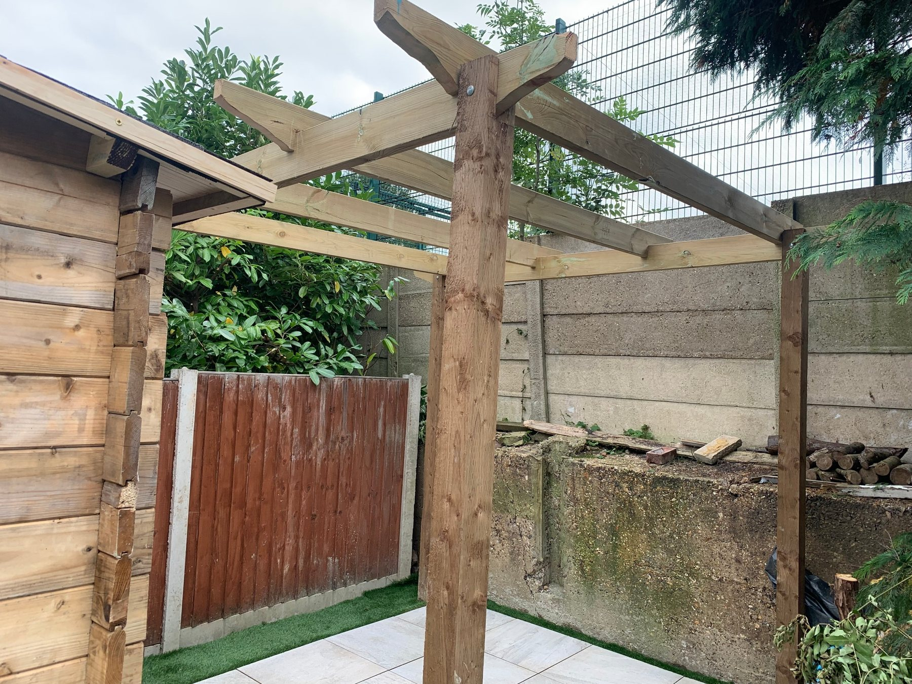

Garden boundaries
Panel and closeboard fencing
JKHA can help with fresh fence runs, replacement panels, trellis-top sections and stronger post arrangements where the garden needs it.
Fence installation, repairs and home improvements across Beckenham. Free quotes, affordable pricing and workmanship backed by a family business established in 2010.
JKHA Home Improvements helps homeowners and landlords in Beckenham with new fencing, replacement panels, repairs, garden gates, concrete posts, gravel boards and complete boundary upgrades.
We focus on strong, tidy results, clear communication and fair pricing. Waste removal can be included, and every quote is free and without obligation.
Panel, closeboard and garden boundary installations.
Damaged posts, panels, gates and storm-related repairs.
Garden gates, posts, gravel boards and finishing details.
JKHA can help with fresh fence runs, replacement panels, trellis-top sections and stronger post arrangements where the garden needs it.

For Beckenham homes with side passages or tight rear access, a few photos help JKHA understand materials, waste removal and timing.

JKHA covers Beckenham and surrounding areas for fencing-led work plus decking, carpentry and broader home improvements.
Yes. Quotes are free and without obligation.
Yes. Waste removal is available and can be included in your quotation.